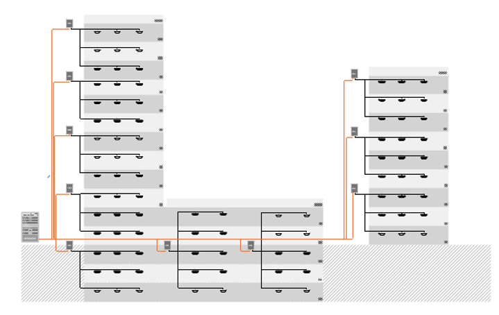
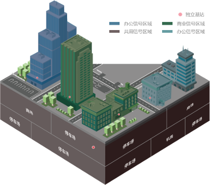
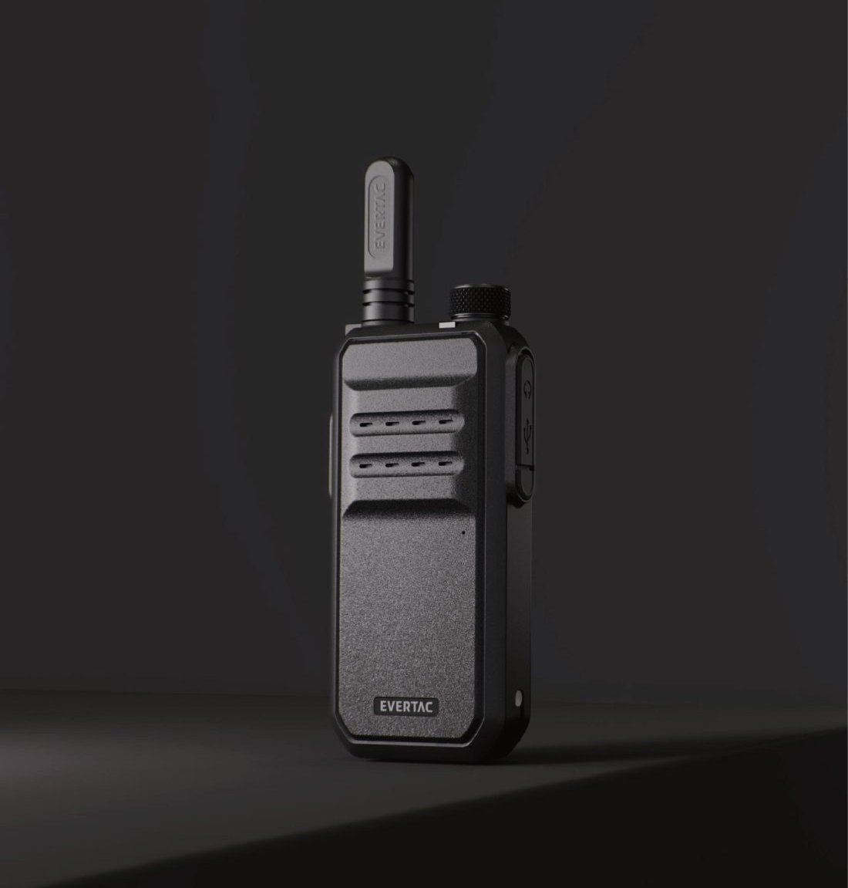

建筑内通信，
难在哪里？
城市智能建筑不断新建，对封闭空间通信的要求越来越高。要满足高密度连接与高频度通信，靠传统方案远远不够。
{{ p.desc }}
分区覆盖，
跨区无缝漫游
DistriNET 用分区技术把建筑划分成多个独立通信区域——每个区域自带来自基站的信号、天线与光纤远端机，覆盖地上与地下空间。用户在楼内自由移动，无需切换设备或重连，系统自动切换与漫游，通信持续不断。

纤薄室内天线，
藏进吊顶，不止于覆盖
室内智能天线外形纤薄，可紧贴白色吊顶或隐藏于吊顶内部，占用空间极小。凭借光纤远端的馈线供电，天线在通信之外还能实现覆盖检测与 iBeacon，为楼内通信与定位提供更多可能。
{{ f.desc }}

多业态共享一套通信基础设施
大型商业地块业态多样，DistriNET 为每个独立区域提供专属通信接入，同时在停车场、登录大厅等公共空间为多用户提供共享通信——既独立，又协同。

办公楼、商业楼等独立业态各自拥有专属信号区域与对讲系统，满足特定业务需求，团队即时协作。
地下停车场、机房、登录大厅等公共空间划为共用信号区域，多用户共享同一通信系统，资源按需共享。

消防救援信号引入，
封闭区域也能通
消防楼梯、地下停车场等封闭区域，传统消防信号往往到不了。DistriNET 集成消防信号引入，以特定频率覆盖到这些盲区，让消防人员在关键时刻始终在线。
在线运维，
快速服务响应
DistriNET 结合 NetFlex 平台，通过云网络与远程技术对系统实时监控——信号质量、设备状态、覆盖范围一目了然。运维人员可远程诊断、配置与排障，服务响应更快。
{{ s.desc }}


智能业务终端，
从通信工具到业务工具
商业对讲机日益向小巧、智能演进：简约外形、清晰音质与降噪，让交流顺畅有效；与调度台、管理软件集成，优化通信流程、简化资源分配。凭借 DistriNET 的信号接入，终端以更低发射功率获得长续航，并与人员实时绑定，实现业务跟踪与管理。
{{ t.desc }}
充电管理及存储方案
集中式充电存储柜取代散落各处的充电座，结合 NetFlex 技术，让终端充电有序、可监控，随时为下一位使用者备好满电对讲机。
{{ c.desc }}
让建筑里的每一次呼叫，都接得通
超高层、综合体、酒店文旅——一套 DistriNET，覆盖地上地下每一个空间。